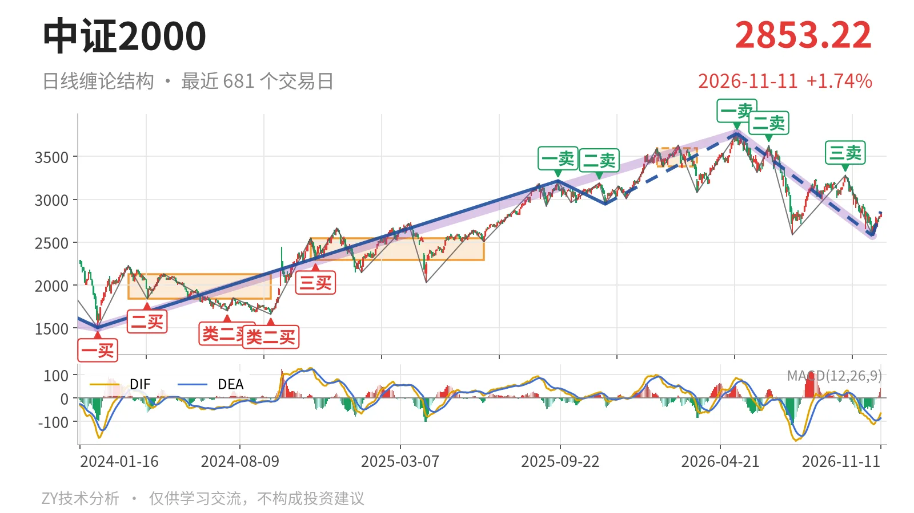
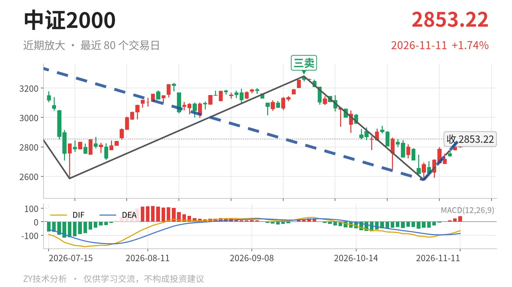

中证2000｜反弹未回3381点，类二买仍待定

最近日线中枢 3381.36—3593.19点，收盘位于中枢之下
一句话：下跌线段还在延续，反弹仅一笔，未回3381点。
📉 走势结构：下跌线段未走完，反弹仅一笔
当前日线仍处于5月14日至11月2日下跌线段的延续中。该线段从3768.08点跌至2576.02点，跌约31.6%，内含5笔，尚未结束。11月2日至11月11日只是从2576.02点反弹至2856.24点，目前只有一笔，不构成日线线段。更大级别上，5月14日开启的下跌走势同样还在延续，所以这里的上涨只能先按反弹看待。

🧭 中枢位置：跌破最近中枢，反抽未回下沿
最新收盘2853.22点位于最近日线笔中枢下方。该中枢为1月26日至3月23日形成，区间3381.36—3593.19点。现价低于下沿约15.6%。2024年11月12日至2025年6月23日的中枢在2293.12—2547.90点，最近中枢明显上移，但5月之后价格重新跌到其下沿之下，中枢下移风险尚未解除。
🎯 买卖点：卖点依次下移，类二买暂定
日线笔级别卖点一个比一个低：5月14日一卖3768.08点、6月23日二卖3626.48点、9月22日三卖3280.29点。当前反弹高点2856.24点尚未回到3280点附近，也未触及最近中枢下沿3381点一线，三卖后的下行结构没有被修复。线段级别11月2日的类二买2576.02点，因其所在5月14日至11月2日下跌线段还在延续，只能先看作暂定，会随线段延伸而变化。

⚡ 背驰观察：新低不新弱，但面积未确认
最近两段下跌笔里，6月23日至7月21日从3626.48点跌至2585.35点，绿柱面积810，DIF低点-164.2；9月22日至11月2日从3280.29点跌至2576.02点，绿柱面积873，DIF低点-108.5。后者价格创出2576.02点新低，但DIF低点抬高，出现“新低不新弱”的DIF信号。不过绿柱面积873大于810，面积没有同步缩小，因此不是标准底背驰。由于下跌线段仍在延续，这个信号只能观察，不足以构成转折依据。
🧭 关键位置：3280与3381点一线
反抽若回不到3280点附近，三卖后的下跌结构不变；重新站上3381点一线，才意味着回到最近中枢下沿上方，5月14日以来的下跌更可能转为中枢扩展。当前反弹高点2856.24点低于3280点，DIF仍在零轴下方，反弹未回中枢，结构偏弱。
⚠️ 本文为基于公开行情数据的缠论技术结构记录，由程序自动计算并生成，仅供学习交流，不构成任何投资建议。市场有风险，投资需谨慎。